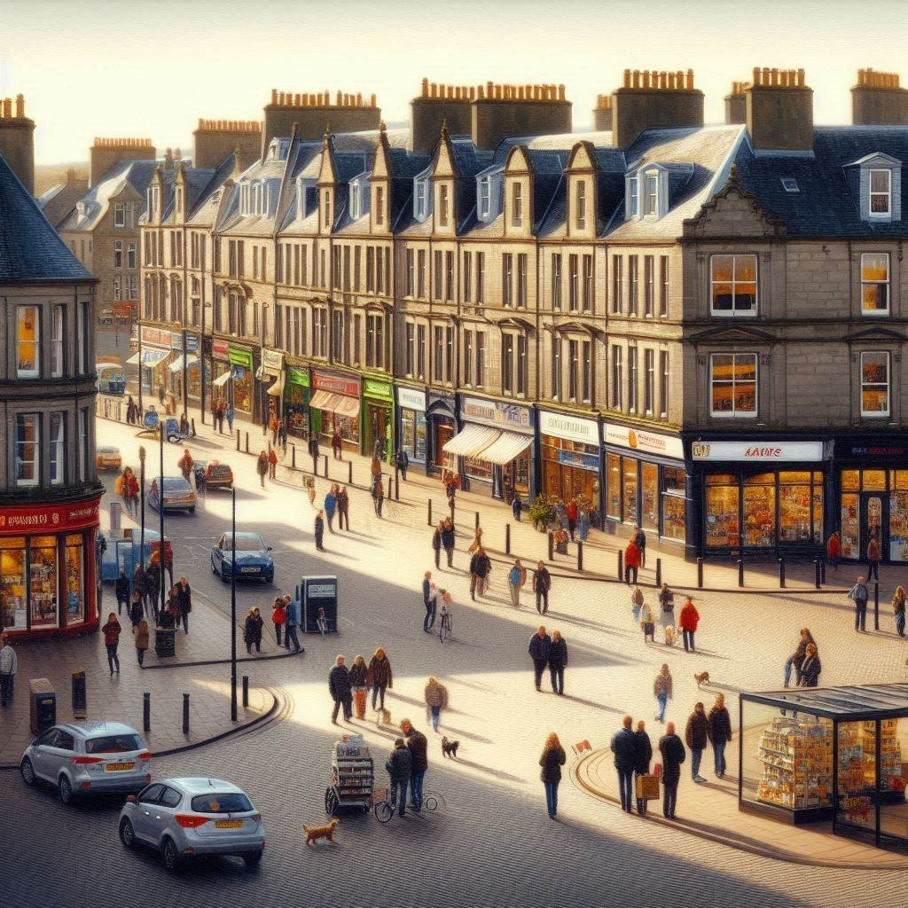

Workshop 3: Group A
TESTING1
Inverkeld Gazette
Breaking News
Anxieties Over Possible Outbreak of Legionellosis in Inverkeld
28 January, 2025
Anxiety intensifies in Inverkeld as health officials investigate a potential outbreak of Legionellosis, raising alarm bells across the region. Though yet to be formally confirmed as a pandemic, suspicions have intensified following a recent startling surge in patients presenting with symptoms indicative of Legionellosis.
Legionellosis is caused by Legionella pneumophila. It is typically transmitted through the inhalation of contaminated water droplets, such as those from air conditioning systems or hot tubs. Symptoms include fever, chills, cough, muscle aches, and headaches. Residents of Inverkeld experiencing any of these symptoms are advised to contact their GP or dial 111 for health advice.
In a press release, the director of the Queen Rose in Inverkeld noted a concerning uptick in individuals reporting symptoms consistent with those associated with Legionellosis. Worries were first raised when the local GPs began reporting an unusual increase in patients with symptoms of Legionellosis. While investigations are still ongoing, the possibility of a pandemic outbreak emerges as a major concern, prompting concern from health agencies.
In response to the growing concerns, health officials have activated several precautionary measures, and Inverkeld have convened an Emergency Pandemic Response Team, which will be meeting on 2025-01-31 and attempting to find solutions that will stop the spread of the pandemic in Inverkeld.
The First Minister assured residents that authorities are leaving covering all bases in their efforts to safeguard public health, and furthermore urged residents to remain vigilant and cooperate with health directives from the Inverkeld City Council. A statement released by the First Minister’s office read: “While there is no confirmation of an outbreak at this time, we are taking this situation very seriously.”
The people in Inverkeld have already begun to weigh the possibility of a pandemic; potential consequences such as school closures, economic repercussions, and strain on healthcare resources, have sparked apprehension among residents, underscoring the need for swift and decisive action.
Contact Information for Further Updates:
More information will be posted on the Inverkeld website as the situation develops: https://www.InverkeldCouncil.co.uk
The Inverkeld Emergency Pandemic Response Team can be contacted on +44 01786 5433 3980 or at pandemic_response@Inverkeld.co.uk
About the Author:
Daniel Martinez is a health correspondent at the Inverkeld Gazette, specializing in public health and safety issues.He can be contacted at dm3389@InverkeldGazette.com.

Inverkeld was granted city status in 1807. Located near Ben Crieff, Inverkeld is noted for its medieval abbey and annual pilgrimage. Major industries in the city include renewable energy, construction, and agriculture.
Inverkeld is well-served by public transport: there are 3 bus companies operating routes that cover the city and outlying areas, and road links to other major cities (the A85 to Stirling and the the A80 to Crieff.) Inverkeld is further connected to regional towns and villages by rail services from the Inverkeld railway station. Inverkeld is also served by Inverkeld Airport, which is 7 miles from the city centre and which offers daily flights to Madrid, Lisbon, and Düsseldorf.
Notable buildings in the city include Inverkeld Castle, Inverkeld Cathedral, and Braemore Court. Inverkeld also has a number of sculpture parks and outdoor art installations and a science museum and a planetarium. The Inverkeld book festival is held annually in June, and tourists also flock to Inverkeld to take city ghost tours in autumn. Inverkeld is also noted as a hub of local arts and culture, with Stewart Hall and Sunset Theatre drawing in crowds for performances from local and international artists. The city is renowned for sports, with the Magpies and Falcons teams representing the city for rugby union and cricket, respectively.
Some of the key Inverkeld features are summarized in the list below.
Public Facilities/Community Amenities
- Schools:
- 7 primary schools
- 6 secondary schools
- 1 college
- Nurseries: 9
- Care Homes: 6
- Restaurants and Cafes: 111
- Parks and Playgrounds: 13
- Libraries: 3
- Gyms and Sports Facilities: 12
- Prisons: 3
- Police and Fire Stations: 3
- Surgeries and pharmacies: 9
- Hospital: the Queen Rose
Refer to the “Data” tab for information about the city demographics, voting and polling data, and more information about the hospital.
Fact Sheet and General Information
Clinical Microbiology and Diagnosis Resources
UK Standards for Microbiology Investigations (UK SMI): Identification of Legionella species
Clinical features of Legionnaire’s Disease and Pontiac Fever

Public Health and Epidemiology Resources
Public Communications Resources
As Inverkeld braces for the possibility of an outbreak, the proactive response of health authorities offers a glimmer of hope in containing the situation. Residents are urged to stay informed and exercise caution as the situation unfolds.
Your office has recently received a great deal of correspondence regarding the pandemic in Inverkeld. A representative sample of these e-mails is shown below.
From: amd_80897@gmail.com
To: provost@Inverkeld.co.uk
Cc: Subject: This Bloody Pandemic
Dear Provost,
I am extremely vexed to hear about this new pandemic in Inverkeld. Too many people have already died from COVID and it seems completely cruel to have another pandemic strike our city again so soon.
I hope that your office is going to do something about all of the poor people dying as soon as possible.
Best wishes,
Kieran
From: lucy_35327@gmail.com
To: provost@Inverkeld.co.uk
Cc: city-council@Inverkeld.co.uk
Subject: Pandemic Disaster for Businesses
Dear Provost,
This new pandemic in Inverkeld has the potential to obliterate our businesses. I run a coffee shop on the high street and almost literally went out of business due to COVID.
I hope you realise how much business we have all lost in recent years, and how much businesses in this city are struggling financially.
I wish that your office is going to do something about all of the poor people dying very soon, keeping in mind the economic interests of businesses in our city and the fact that we cannot afford the draconian lockdowns you imposed during COVID.
Sincerely,
Anika (Bella’s, proprietor)
From: js_1089@gmail.com
To: provost@Inverkeld.co.uk
Cc: city-council@Inverkeld.co.uk
Subject: Stop This Madness
Dear Provost,
I fear that you and your office are going to use this new pandemic as yet another excuse for government overreach into citizens’ lives. Machiavelli said that power corrupts absolutely, and he was absolutely right - look at what happened during the last pandemic.
You must not allow the city to suffer through another round of lockdowns, face-masks, and other punitive restrictions that destroy people’s lives.
Yours truly,
Su (a concerned voter)
From: bhr_42625@gmail.com
To: provost@Inverkeld.co.uk
Cc: city-council@Inverkeld.co.uk
Subject:
Dear Provost,
I have just learned that my my mother-in-law has passed away due to the new pandemic in Inverkeld. This is especially terrible coming hard on the heels of all of our losses due to COVID-19.
This is especially terrible coming hard on the heels of all of our losses due to COVID-19.
I really wish that our government had better learned its lessons from the COVID-19 pandemic and could have prevented this terrible tragedy.
All the best,
Roman
Introduction
These pages provide a WebR cells for you to use as a tool and playground to analyse data from and about your city’s pandemic scenario. [explain why]
If you are unfamiliar with R, or if this is your first time working with R, you may find some of the following resources helpful:
The WebR instance we will be using has the tidyverse package already installed for you, so you do not need to load it using the library(tidyverse) command. The tidyverse package contains ggplot2, dplyr, readr, and a number of other packages that make working with data in R easier.
Important
Please note that all of these data are available remotely through a cloud server and you can work with them using the webR instance in this browser window - you do not need to install R or download the files to your own computer.
However, you do need to make sure you are working with the correct data. Please make sure you carefully check the filename(s) for your particular pandemic scenario.
Tip
You may divide the data analysis tasks amongst your group members, and work through the sections/tasks, in any order you choose.
As you work through each task, note that there are tips and hints that you can expand for additional help.
City Demographics, Polling, and Budget
You will want to understand the demographics of Inverkeld to inform your pandemic responses: for example, you will want to know the number of people living in your city, the number people in demographic groups that might be particularly vulnerable during this pandemic, and so on. You will find the data from the latest census in a file named: demographics_groupA.csv, and a suggested workflow for analysing these data here: Demographic Data Analysis
You will want to understand public opinion in Inverkeld, including voting/voting intention data (to understand the level of public support for the city council), and polling data on various public health/epidemiological measure (to understand the level of public support for various health measures/non-pharmaceutical interventions). You will find the latest voting data in a file named: voting_groupA.csv, and the polling data in a file named: polling_groupA.csv (associated metadata saved in polling_questions_A.txt). You will find a suggested workflow for analysing these data here: Polling Data Analysis.
You will want to understand the budget of Inverkeld, especially the funds available for the city’s contingency planning budget, which can be used to finance pandemic responses. You will find the data from the latest budget in a file named: budget_groupA.csv, and a suggested workflow for analysing these data here: Demographic Data Analysis.
Hospital and Death Data
You will want to understand the number of people who have died due to Legionellosis, by analysing data from death certificates that have been filed in Inverkeld in the past month. You will find the death certificate data in a file named: deaths_groupA.csv, and a suggested workflow for analysing these data here: Death Certificate Data Analysis.
You will want to understand the status and pandemic preparedness of the Queen Rose, including the number of admissions due to Legionellosis. You will find the hospital admissions data in a file named: hosp_admissions_groupA.csv, and a suggested workflow for analysing these data here: Hospital Admissions Data Analysis [N.B. Data file done but may require tweaking dates/#s)]
You can find key information about the main hospital in Inverkeld, the Queen Rose in the Hospital Dashboard.
Epidemiological Data
Group A epidemiology
City Pandemic Planning Resources
COVID-19 health protection guidance released by Public Health Scotland
Tackling antimicrobial resistance 2019–2024: The UK’s five-year national action plan
UK One Health Report - Joint report on antibiotic use and antibiotic resistance, 2013–2017
Scottish One Health Antimicrobial Use and Antimicrobial Resistance in 2021
Hospital Pandemic Preparedness and Planning
As a hospital director, you are familiar with the literature surrounding hospital pandemic preparedness, and regularly read papers such as:
Mer, Mervyn et al. “Critical Care Pandemic Preparation: Considerations and Lessons Learned from COVID-19.” Critical care clinics vol. 38,4 (2022): 761-774.
Tacconelli, Evelina et al. “Challenges of data sharing in European Covid-19 projects: A learning opportunity for advancing pandemic preparedness and response.” The Lancet regional health. Europe vol. 21 (2022): 100467.
Adelaja, I., Sayma, M., Walton, H., McLachlan, G., de Boisanger, J., Bartlett-Pestell, S., Roche, E., Gandhi, V., Wilson, G. J., Brookes, Z., Yeen Fung, C., Macfarlane, H., Navaratnam, A., James, C., Scolding, P., & Sara, H. (2020). A comprehensive hospital agile preparedness (CHAPs) tool for pandemic preparedness, based on the COVID-19 experience. Future healthcare journal, 7(2), 165–168.
Communications Resources
Matta, G. Science communication as a preventative tool in the COVID19 pandemic. Humanit Soc Sci Commun 7, 159 (2020).
Abdool Karim, Salim S. “Public understanding of science: Communicating in the midst of a pandemic.” Public understanding of science (Bristol, England) vol. 31,3 (2022): 282-287.
Royan, Regina et al. “Use of Twitter Amplifiers by Medical Professionals to Combat Misinformation During the COVID-19 Pandemic.” Journal of medical Internet research vol. 24,7 e38324. 22 Jul. 2022, doi:10.2196/38324
Tait, Margaret E et al. “Serving the public? A content analysis of COVID-19 public service announcements airing from March - December of 2020 in the U.S.” Preventive medicine reports vol. 29 (2022): 101971.
Mer, Mervyn, Diptesh Aryal, Nathan D Nielsen, Ary Serpa Neto, Bhavna Seth, Madiha Raees, Martin W Dünser, and Kristina E Rudd. 2022. “Critical Care Pandemic Preparation: Considerations and Lessons Learned from COVID-19.” Crit. Care Clin. 38 (4): 761–74.
Tacconelli, Evelina, Anna Gorska, Elena Carrara, Ruth Joanna Davis, Marc Bonten, Alex W Friedrich, Corinna Glasner, et al. 2022. “Challenges of Data Sharing in European Covid-19 Projects: A Learning Opportunity for Advancing Pandemic Preparedness and Response.” Lancet Reg. Health Eur. 21 (100467): 100467.
Epidemic Calculator
Tip
The following list of references is provided as a starting place for you to begin exploring various aspects of Legionella pneumophila biology, diagnostics, epidemiology, and treatment. However, this is by no means an exhaustive list: you should further explore the relevant peer-reviewed literature independently.
Buultjens, Andrew H, Kyra Y L Chua, Sarah L Baines, Jason Kwong, Wei Gao, Zoe Cutcher, Stuart Adcock, et al. 2017. “A Supervised Statistical Learning Approach for Accurate Legionella Pneumophila Source Attribution During Outbreaks.” Appl. Environ. Microbiol. 83 (21).
McCormick, D, S Thorn, D Milne, C Evans, J Stevenson, M Llano, M Donaghy, and Collective on behalf of the Incident Management Team. 2012. “Public Health Response to an Outbreak of Legionnaires’ Disease in Edinburgh, United Kingdom, June 2012.” Euro Surveill. 17 (28).